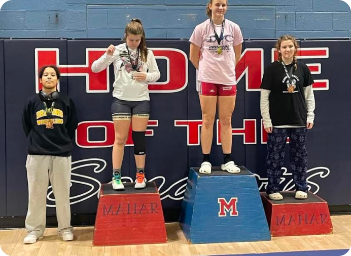

Wrasling
I started wrestling in my senior year. Wrestling has taught me a
lot of things like discipline, pushing your limits, and carefully
executing your plans. I have won 5 matches so far with 5 pins, no
technical falls. This picture was of me winning 5th place in the 152
weight class in the Mahar Girl’s Tournament!

Classics Club
I’ve been a part of this club since my junior year. This club has
endured a lot of challenges. It is my goal as president in my senior
year to springboard some improvements.
QuestBridge
In December, I found out I won a full scholarship through
QuestBridge. QuestBridge is a nonprofit program for low-income
high-achieving teens to have an opportunity to attend the best
colleges in the US.. The process was a handful but the end result
made it all worth it.
College
Not only do I plan to major in computer science at Boston
University, but I also plan to create and strengthen a community
there in many different facets.